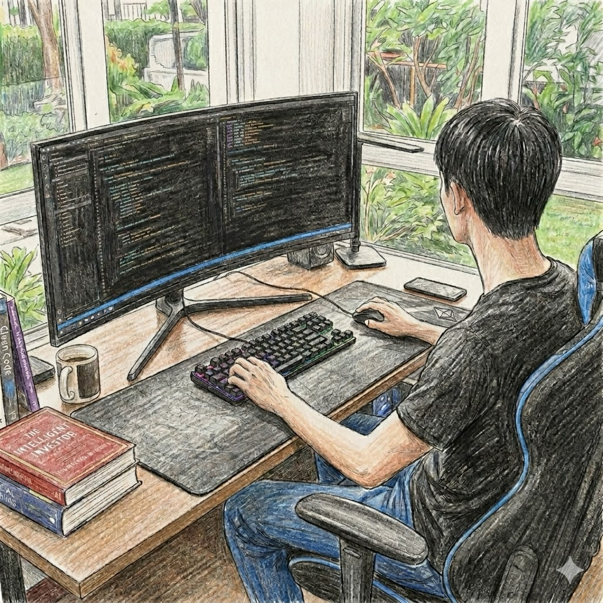

Kyo
共同創辦人 暨 資深工程師
我是 Kyo，一個在軟體世界裡摸索了 20 多年的資深工程師。
對我來說，code不僅僅是枯燥的程式碼，而是一個充滿魔法的實驗室——我熱衷於捕捉那些稍縱即逝的創意火花，並將其轉化為真實可觸的科技產品。在這個日新月異的時代，世界變化得飛快，但我並不焦慮，反而認為這是我們最幸福的時刻，因為科技賦予了每個人「將想像力變現」的無限可能。
很多人問我：長期與那些複雜的技術難題共處，不會覺得枯燥或挫折嗎？對我而言，那從來不是痛苦。我始終相信，沒有無法解決的問題，如果暫時遇到了挑戰，那只代表我們需要換個視角去挖掘答案。這種探索的過程，與其說是對抗，更像一場充滿樂趣的解謎。